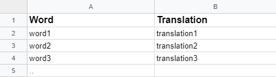

<ng-container *ngIf="words$ | async"></ng-container>
<ng-container *ngIf="isResetCsvHandlerState$ | async"></ng-container>
<ng-container *ngIf="isCloseCsvHandler$ | async"></ng-container>
<mat-expansion-panel class="group-statistics mb-3" hideToggle [expanded]="_expanded">
  <section class="download"></section>


  <section class="upload text-center">
    <div class="d-flex">
      <i class="fas fa-info" (click)="showInstruction()"></i>
      <i class="fas fa-upload" (click)="fileInput.click()"></i>
    </div>

    <p class="mt-2" *ngIf="selectedFile">{{selectedFile.name}}</p>
    <input #fileInput type="file" (change)="showFile(fileInput.files[0])" multi name="uploadFile" hidden>


    <a [ngClass]="{'disabled': isLoading$ | async}" *ngIf=" selectedFile" (click)="onUpload(fileInput.files[0])"
      class="custom-button dark mb-3 w-50" type="submit">Upload</a>
    <app-loader [show]="isLoading$ | async"></app-loader>
  </section>

</mat-expansion-panel>

<ng-template #instruction>
  <div class="instruction">
    <span class="title">Words can be added even easier using CSV file. <br>
      Below is an example table: <i>"your-filename.csv"</i> </span>
    
  </div>
</ng-template>
